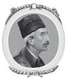
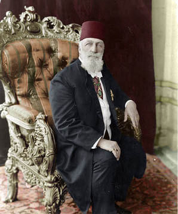
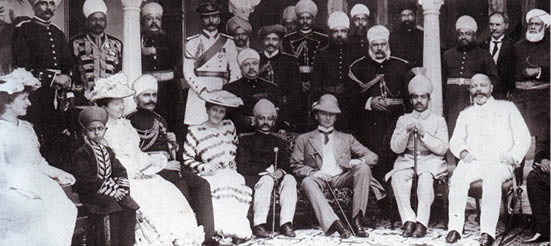
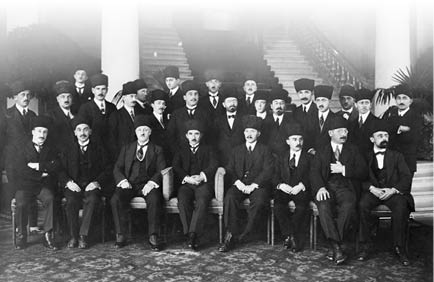
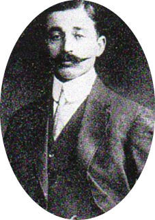
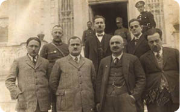

SALTANATIN VE HALİFELİĞİN KALDIRILMASI

Sultan Vahdettin
[Sir Valentine Chirol, son basımda, Lord Eversley’in talebi üzerine, Türk İmparatorluğu’nun tarihinin, Osmanlı Devleti’nin Birinci Dünya Savaşı’na girmesinden 11 Ekim 1922 tarihinde imzalanan ve düşmanlık döneminin sonlanmasını sağlayan Mudanya Mütarekesi’nin düzenlenmesine dek geçen zamanını aktarmıştır. Bu basımda ise halifeliğin kaldırılması ve cumhuriyetin ilanı ile son bulan Osmanlı İmparatorluğu sultanları ve halifeleri, uygun bir şekilde eklenmiştir.]
Mudanya Mütarekesi, Osmanlı İmparatorluğu ile İtilaf Devletleri ve Yunanistan arasında nihai barış görüşmelerine giden yolu hazırlamıştır. Fakat Türk-Yunan düşmanlığının sona erdirilmesine rağmen, Çanakkale Boğazı ile İstanbul’daki askerî durum hassasiyetini korumuştur. Yunanların bozguna uğratılmasının ardından Türklerin başarılı taarruzlarını tek başlarına durduran İngiliz kuvvetleri, Mütareke tarafından Çanakkale ve İstanbul’u da içine alan İzmit yarımadasındaki savunma hatlarını güçlendirmekten men edilmiş ve Türkler de yaklaşık olarak yüz kırk bin askerden oluşan ordularını tekrar meydana getirerek kendi özgür kararlarını vermiştir. İtilaf Kuvvetleri ordusunun bir bölüğü Çanakkale’de kalırken diğeri İstanbul’u tehdit etmek üzere Boğaz’a getirilmiştir. Üçüncü bir bölük ise her iki kanada da gerektiğinde destek vermek üzere Bursa’da konuşlanmıştır. Anlık bir çatışma tehlikesi dahi önem arz ettiği için İtilaf Devletleri komutanları, Yunan ordularının geri çekilmesini isterken Yunan halkının da Trakya’yı boşlatması gerektiğini bildirmiştir.
Ankara, önceden bildirmeksizin ihtilal başlatmıştır. TBMM, 1-2 Kasım tarihlerinde, oy birliğiyle padişahlığı kaldıran ve Türk İmparatorluğu’nu demokratik bir devlet haline getiren kararı ilan etmiş; fakat Halifeliği kaldırmamıştır. Cumhuriyet sözcüğü alenen ağızlara alınmasa da Osmanlı Sarayı vatana ihanet, yolsuzluk ve düşman kuvvetlerden yana olmakla suçlanmış ve egemenlik Saltanat’tan alınarak, egemenlik hakları “başkasına devredilemez, bölünemez ve geri alınamaz” olan millete verilmiştir. Osmanlı Hanedanı ile özdeşleşmiş olan Halifelik unvanı ise bu kararla birlikte, TBMM tarafından seçilecek olan Osmanlı ailesinin en kültürlü, dürüst ve asil üyesine verilecektir. Trakya’ya vali olarak atanmış olan Refet Paşa, karar halka duyurulur duyurulmaz yürürlüğe sokmak için İstanbul’a gelmiştir. Sultan IV. Murad derhal bu duruma karşı koymuş ve –Osmanlı tarihinde son kez- Cuma namazı ve Selamlık törenlerine katılarak haysiyetini korumuştur. Birlikler ise eskiden kalma bir alışkanlık olan padişahı coşkuyla karşılama töreni olmaksızın yalnızca orada hazır bulunmuş ve Cuma Hutbesi’nde de Sultanlıktan değil Halifelikten bahsedilmiştir. Sultan, hayatının tehlikede olduğunu düşünüp 17 Kasım tarihinde bir İngiliz gemisine sığınarak Malta’ya gitmiştir. Bu yardım, İtilaf Devletleri’nin destek vaatlerine inanmış olan ve istemiş oldukları her şeyi yerine getirmeye çalışan şanssız padişahın İtilaf Devletleri’ne inanmış olmasının cezasını öderken İngilizlerin geri çevirmediği son bir görev olmuştur. Sultan, Malta’dan, önemli bir misafir olarak karşılandığı Mekke’ye Kral Hüseyin’i ziyarete gitmiş ve daha sonra da tarihin sayfalarından silinmiştir. Onunla birlikte, yükselme devrinde bütün güney Avrupa’yı dize getirmiş ve Batı Hıristiyanlarına büyük bir tehdit oluşturmuş olan, dağılma döneminde ise Avrupa’da sürekli olarak çatışmaların çıkmasına neden olmuş olan Osmanlı İmparatorluğu da yok olup gitmiştir. Ankara hükümetinin, Türkiye’nin daimi bir parçası olduğunu belirttikleri için sürdürmeye kararlı oldukları Halifelik makamı, sultanın ülkesini terk etmesiyle birlikte boş kalmış ve bu makam Müslüman olmayan birine devredilemeyeceği için TBMM, eski sultanın kuzeni ve Sultan Abdülaziz’in hayatta kalan en büyük oğlu olan Şehzade Abdülmecid’i, Osmanlı Hanedanı’nın tahta çıkma esaslarına göre, yeni halife olarak seçmiştir. Abdülmecid halife ilan edilmiş; fakat otorite sahibi olmadığını belirtmek adına Osmanlı sultanlarının tahta çıkarken kuşandıkları Sultan Osman’ın kılıcından mahrum edilmiştir. Abdülmecid’in halife seçilmesi Müslüman dünya için aykırı bir durum olmamış; fakat Osmanlı Hanedanı’ndan manevî sorumlulukların yerine getirilmemesi için seçilmiş olan ilk şehzadenin aslında eğitimi ve kişisel eğilimleri itibariyle Batı hayatına ve alışılmışın dışında bir hayat tarzına yatkın olan ilk şehzade olması da ilginç bir tesadüftür.

Sultan II. Abdülmecid
Türk Devleti’nin başkentinin idari kontrolü bir kez daha Mustafa Kemal’e geçmiş ve İstanbul’da bulunan asker sayısının toplam yirmi bin olduğu İtilaf Devletleri’nin askerî durumu da Anadolu’dan gelen Türk birlikleri sayesinde gittikçe daha kötü bir hal almıştır. Fakat en kontrolsüz provokasyonların dahi ne zaman hoş görülebileceğini bilen Başkumandan Harington’ın metaneti ve ön sezileri sayesinde mevcut düzen sürdürülmüş ve eskiden yeniye geçiş en az hasarla gerçekleşmiştir. Osmanlı İmparatorluğu’nu ortadan kaldırmış olan ihtilalın önemiyle birlikte, Avrupalı güçlerin, Barış Konferansı’nda, TBMM’nin başlatmış olduğu katı tutumu göz önünde bulundurması gerekmiştir.
Ankara hükümeti, nihai barışın sağlanması için istekli olduğunu bildirmiş ve 20 Kasım tarihinde Lozan’da bir konferans düzenlenmiştir. Bu konferansa sekiz devletten temsilci katılmıştır: İngiltere, Fransa, İtalya, Japonya, Romanya, Yugoslavya, Yunanistan ve Türkiye. İngiliz temsilciler heyetine Lord Curzon, Fransız heyetine M. Barrere, İtalyan heyetine ise Marki Garroni başkanlık ederken Türklerin baş temsilcisi İsmet Paşa olmuş, M. Venizelos ise Kral Konstantin’i bir kez daha sürgüne göndermiş olan Devrimci Hükumet’in isteği üzerine, bütün vatanseverliğiyle, İtilaf Devletleri’nin Yunan saldırılarını desteklemeyi bırakması üzerine Anadolu’dan çekilmeyi önerdiği için kendisine garip gelse de Yunan temsilcilerinin başkanı olarak konferansa katılmıştır. Anadolu’daki son yenilgilerinde toplu soykırımlar yapmış olan Yunan ordusunun zalimliklerinden ve eski bakanların 1922 yılının Aralık ayında Atina’da yargılanmasından dolayı Yunanistan’ın nüfuzu azalmıştır.
Türkiye ile hiçbir zaman resmî olarak savaş içine girmemiş olan Birleşik Devletler yalnızca bir “gözetmen” tarafından temsil edilmiş ve konferansın başlangıcında “niyetinin kendisi veya milletleri için imtiyaz talebinde bulunmak olmadığını yalnızca haklarını korumak ve dostluk kapılarını açık tutmak istediğini” dile getirmiştir. Rusya’nın birtakım çıkarlarının olduğu Boğazlar ve Karadeniz ile ilgili görüşmelerde rol alması için Lozan’a davet edilen Sovyet delegasyonu, Konferans’ta görüşülen tüm konulara tam ve eşit bir şekilde katılma hakkı talebinde bulunmuştur. Bu talep Türkiye tarafından desteklenirken diğer güçler tarafından reddedilmiştir. Üç ana komisyon tarafından yürütülen müzakereler, Türkiye ve diğer ülkelerin bireysel sorunlarının yanı sıra, Kapitülasyonlar, Türkiye’nin mali taahhütleri, Boğazların özgürlüğü ve Karadeniz’in hâkimiyeti gibi daha uluslararası bir kapsamı ve dünya çapında çıkarları içermiştir. İki aydan fazla bir süre boyunca, Lord Curzon’un İtilaf Devletleri adına başkanlığı devraldığı çekişmeli görüşmeler devam etmiştir. Fakat Curzon’un görüşmeleri güçlü bir şekilde tertiplemesine ve etkili ve hatta bazen tehditkâr olan tavrına rağmen, bu kibirli işgalcilerin barış koşullarını görüşmek için değil uygulatmak için geldiklerini düşünen Türk delegasyonunun inatçılığını delmeyi başaramamıştır. Yalnızca İsmet Paşa diplomatik ilişkilerdeki kısıtlamaları kabul edebilecek ve mantık çerçevesinde kararlar alabilecek gibi görünmüştür. İsmet Paşa, görüşmelere, Rusların, diğer güçler için tamamen kabul edilemez olan Karadeniz ve Boğazlarla ilgili taleplerini dinlemeye müsaade vererek başlamış ve Ruslara şartsız olmasa da destek vermiştir. Fakat daha sonra Lord Curzon’un, Türklerin mantıklı bir düzenlemeyi kabul edene kadar Gelibolu’yu boşaltmayacaklarını bildirmesiyle savurduğu tehdidin ardından İsmet Paşa Ruslarla olan bağlantısını kesmiş ve uzlaşmacı bir tutum sergilemiştir. Ancak Curzon’un, Musul sorununun Milletler Cemiyeti’ne aksettirilmesine dair teklifini kabul etmemiştir. Kapitülasyonlara gelince, Türkiye, Kapitülasyonların tamamen ve koşulsuz olarak kaldırılması hususunda ısrarcı olmuş ve kendi milletlerinin korunması için Büyük Güçleri’n sunduğu bütün diğer alternatif ihtiyatları da reddetmiştir. Bu konuyla birlikte Türkiye’nin ekonomik ve mali sorunlarında da tamamen çıkmaza girilmiştir. Türkiye’nin ekonomik durumlarıyla ilgili, ülkenin savaş öncesi alacaklısı olan Fransa, bu konuyla diğer tüm devletlerden daha fazla ilgilenmiş ve Ankara ile yapmış olduğu ayrı görüşmelerde ortaya koyduğu beklentilerinin yerine getirilmemesinden de ayrı bir üzüntü duymuştur. Mutabakata varılabilen tek nokta, ‘Yakın Doğu’daki mülteciler Yüksek Komiseri’ Dr. Nansen tarafından hazırlanan rapor sayesinde ulaşılmış olan, Türk ve Yunan azınlıklarının zorunlu değişimi olmuştur. Dr. Nansen’a göre, böyle bir değişim, büyük savaşın enkazı olarak kalmış olan milyonlarca kimsesizi tek başına açlıktan kurtarabilir. Böyle bir nüfus mübadelesi, Türklerin, İstanbul’da yaşayan üç yüz bin Yunanlının da topraklarından gönderilmesine dair taleplerinden vazgeçmelerine rağmen, hâlâ Anadolu’da yaşayan altı yüz binden fazla Yunanlının değişimini öngörmüştür. 30 Ocak 1923 tarihinde bu mübadelenin gerçekleştirilmesi için Türk ve Yunan elçileri tarafından bir konvansiyon imzalanmış ve İtilaf Devletleri de insan hakları için bu konvansiyona onay vermek durumunda kalmıştır. Fakat bu onayla, İtilaf Devletleri’nin, Anadolu’nun doğu bölgelerine, Türklerin hakimiyeti altında, Ermeniler için bir bölge oluşturulmasına dair taleplerinden vazgeçerek, en önemli savaş nedenlerinden birinden ve hatta azınlıkların haklarını korumaya dair verdikleri vaatlerden de vazgeçmeleri söz konusu olmuştur.

On haftalık bir çalışmanın sonunda Büyük Güçler, ulaştıkları yetersiz sonuçlara rağmen, hâlâ, Türk delegasyonundan, 31 Ocak tarihinde son sözleri olarak sundukları taslak antlaşmayla ilgili ümitli olmuştur. Fakat bu antlaşmayla bırakmak istedikleri etki, İtalya’nın desteğini alan Fransız hükümetinin bir yandan Mustafa Kemal’i antlaşmayı imzalamaya ikna etmeye çalışırken diğer yandan da bu antlaşmanın bir ültimatom niteliğinde olmadığını ve Fransa’nın Lozan’da veya başka bir yerde görüşmeleri sürdürmeye hazır olduğunu bildirdiğinde zayıflamıştır. Konu, Lozan’da birkaç gün askıya alınmıştır. Ruslar, Boğazlarla ilgili hükümleri tamamen reddetmiş ve antlaşmanın bazı kısımlarını makul bulsalar da antlaşmayı tamamen kabul edecek gibi görünen Türklerle araları bozulmuştur. Dört Şubat tarihinde, uzun ve zorlu geçen oturumlardan sonra antlaşma hâlâ imzalanamadan Lozan’ın bu aşaması sonlanmış ve katılımcılar dağıldıktan sonra Türklere birkaç imtiyaz daha tanınmıştır.
Yine de ne Türkiye ne de diğer devletler, farklı sebeplerden dolayı, görüşmeleri sonlandırmak istememiştir. İsmet Paşa, Ankara’ya gitmeden önce, görüşmelere yalnızca ara verildiğini bildirmiş ve Ankara Meclisi, Lord Curzon tarafından sunulan taslak antlaşmanın Türk Milli Paktı ile uyum içinde olmadığından dolayı reddedilmesi gerektiğini düşünürken bakanlarına görüşmelerin sürdürülmesi gerektiğine dair talimat vermiştir. Bu talimatlar, 8 Mart tarihinde, uzlaşmacı nitelikte olan bir Türk Notası’nda toplanmış ve 21 Mart tarihinde Londra’da görüşen İtilaf Devletleri temsilcileri de aynı uzlaşmacı tona sahip olan Müttefik Devletler Notası’nı yayımlamış; bu nota 27 Mart tarihinde Ankara’ya gönderilerek Türkleri, hızlı bir şekilde tekrar başlatılacak olan Lozan Konferansı’na davet etmiştir. Konferans, 23 Nisan tarihinde tekrar başlatıldığında, delegasyonlarda yapılmış olan en önemli değişiklik, Lord Curzon’un yerine İstanbul’daki İngiliz Yüksek Temsilcisi Horace Rumbold’un geçmiş olmasıdır.
Konferansın manzarası ilk başta güven verici olmamıştır. Birkaç gün sonra, Meclis-i Mebusan’ın onayıyla Ankara hükümeti tekrar konferansa katılmış ve mali destek karşılığında, Anadolu’da üç bin millik demiryolu yapımı için bir Amerikan sendikası ile “Chester İmtiyazı”nı imzalamıştır. Fransız hükümeti, 1914 yılında, Birinci Dünya Savaşı’ndan önce Osmanlı İmparatorluğu Fransız bir gruptan 16.000.000 poundluk bir borç aldığı için vermiş olduğu sözleri ihlal ettiği gerekçesiyle Amerikalılarla yapılan antlaşmaya karşı çıkmıştır. Fransızlar, ayrıca, Ankara hükümeti ile yapılan Franklin Bouillon Antlaşması’na dayandırdıkları ümitlerden de vazgeçmek durumunda kalmıştır. Fransızların ümitleri gerçekleşmiş olsaydı yalnızca siyasî değil ekonomik alanda da derin ve kapsamlı etkilere sahip olacaktı; fakat mevcut durumda, Türklerin mantığını Fransızların diplomasisinden daha iyi anlamış olan bir avuç insan bu imtiyazların, imtiyazı alan Amerikalıların görevi yerine getiremeyeceği için, nihayetinde buhar olacağını sezmiştir. Ayrıca, Türk delegasyonu da Lozan’da, Türklerin savaştan önce vermiş oldukları mali taahhütlerin yerine getirilmesine dair yeni zorlukları gündeme getirmiştir. Türkiye, Osmanlı İmparatorluğu’ndan kalan borçların faizlerini, alacaklıların talebine göre sterlin veya frank para cinsiyle ödemek durumundadır. Fakat borçlarını, değeri düşmüş Fransız frankı ile ödeme hakkının olduğunu iddia etmiştir. Bu iddia, Türklerin en büyük alacaklısı oldukları için Fransızları çileden çıkarmış; fakat Türkler de Fransa’nın kendi borçlarının faizini Fransız para biriminin nominal değeri ile ödediği gerçeğini hatırlatarak kendilerinin de bunu yapmaya haklarının olduğunu bildirmiştir. Fransızların hoşnutsuzluğu, Türklerin, Anadolu’da Türk hükümetinden ödenek alınmadan yapılacak ilk tren hattı olan İzmir-Aden demir yolunun yapılması için İngiliz imtiyaz sahipleri ile doğrudan görüşmeye istekli olduğunu gördüğünde daha da artmış ve ayrıca İngiliz sendikasının, Anadolu’daki demiryolunun inşası için Alman asıllı olduğuna inanılan, fakat aslında bir İsveç bankasına ait hisselerini sağlama alması ve böylece İstanbul ile Bağdat arasındaki ana hattın Boğaz ile Konya arasındaki ilk bölümünün İngilizlerin kontrolüne geçebileceği gerçeğiyle yüzleşmesiyle iyice çileden çıkmıştır. Fransızlar, Ankara hükümetinin büyük birlikler gönderdiği Suriye sınırlarında da sorun yaşamış, ayrıca Mustafa Kemal Halep ile Hatay’ın geri alınacağına dair bildirilerde bulunmuştur. Fransızlar, Suriye’de komutayı ele alan General Weygand komutası altındaki destek birliklerini bölgeye göndermiş ve Ankara’yı, delegasyonlarını Lozan’dan geri çekmekle tehdit etmiştir. Mustafa Kemal, asıl maksadı ne olursa olsun, o an için boyun eğmenin mantıklı olacağını düşünmüş ve Fransız hükümetine niyetlerinin tamamen barış yanlısı olduğuna ve Türk birliklerinin eylemlerinin seferberliğin bitirilmesi planının bir parçası olduğuna dair güvence vermiştir.
Fransızlar bu güvenceyi kabul etmiş, bu sorun ortadan kaldırılırken Türklerle Yunanlar arasında daha ciddi bir sorun ortaya çıkmıştır. Türk-Yunan düşmanlığından doğan tazminatlar, Türk delegasyonunun, Yunanların iddialarını kabul etmeksizin Yunanistan’dan tam tazminat alma niyetlerinin olduğunu açıklayıp iki ülke arasındaki Meriç sınırının da güncellenmesi talebini dile getirdiğinde prensipte iddiaların tanzim edilmesi düzenine oturtulmuştur. Yunanistan, o ana kadar, Anadolu’da yaşamış olduğu askerî felaketleri kısmen de olsa telafi etmiştir. Yunanistan ordusu tekrar yapılandırılmış ve Trakya’dan çekilmiş olmasına rağmen Meriç’in batı kısmına, uğradıkları bozgunun intikamını almaya istekli yüz bin asker bırakarak gücünü korumuştur. Fakat haftada 500.000 pounda mal olan bu askerler, tükenmekte olan hazineye büyük bir yük bindirmiş ve Yunan halkı da Türklerin ortaya attığı her iddiayla birlikte daha çok öfkeye kapılmıştır. M. Venizelos ile İsmet Paşa nihai bir konferans için 17 Mayıs tarihinde bir araya gelmiş; fakat herhangi bir sonuca ulaşılmamıştır; Yunan hükümeti de Türkleri, delegasyonlarını Lozan’dan çekmekle tehdit etmiştir. Diğer devletlerin aşırı baskısı altında birkaç gün sonra, M. Venizelos’un tazminat yerine Karaağaç ve Meriç’in batısında kalan bir toprak parçasını Türkiye’ye vermeyi teklif etmesi üzerine anlaşmaya varılmıştır. İsmet Paşa bu teklifi Ankara’ya sunmuş ve teklifin kabul edilmesi yeni düşmanlıklara yol açmıştır. Demiryolu hatlarının bir kısmını Türkiye’ye devrederek Ege’ye erişimini sağlayan Bulgaristan’ın bu düzenlemeye karşı çıkması, Türkiye’nin yeniden güçlenmesinin Balkan yarımadasını tehlikeye düşürdüğüne dair bir uyarı niteliği taşımıştır.

Lozan’da haziran ayı boyunca ve Temmuz’un ilk üç haftasında yaşanan sonu gelmez çekişmeleri tüm detaylarıyla anlatmak gereksiz olacaktır. Konferansa katılan hiçbir devlet savaşa girmek istemediği ve Mustafa Kemal de devletin iç işleriyle uğraşmak için müsait olmak istediği için birçoğu Türkiye lehine olan bir dizi ödünler verilmiş ve bunlar da 24 Temmuz 1923 tarihinde nihai barış antlaşmasının imzalanmasına giden yolu açmıştır.
Beş alt konvansiyon ve on iki protokolle birlikte bu antlaşma kapsamlı bir antlaşma olmuştur. Antlaşmanın başlıca maddeleri:
Madde 1: İngiltere, Fransa, İtalya, Japonya, Yunanistan, Romanya ve bir tarafta Sırbistan diğer tarafta Türkiye olmak üzere barışın tekrar sağlanması gerektiği bildirilmiştir.
Madde 2-11: Doğu Trakya’yı Türklere bırakarak Türkiye’nin Avrupa’daki yeni sınırları belirlenmiş ve Asya’da da eski Arap vilayetlerinin terk edilmesi bildirilmiştir; Türkiye ile İngiltere arasındaki dostluk ilişkileri gereği korunan Irak sınırı konusu çözülememiş ve Milletler Cemiyeti Konseyi’ne taşınmıştır. Takip eden diğer sayısız madde ise Ege’deki adalarla Yunanistan’a bırakılmış olan Türk topraklarına yakın adalardaki seferberlik halinin sonlandırılmasıyla ilişkilidir. Türkiye, On iki Adalar ve Trablus’taki bütün haklarından, İtalya’nın lehine olacak şekilde, Mısır ile Sudan’daki haklarından ise kimin lehine olacağını bildirmeden feragat etmiştir. Antlaşmanın ikinci bölümü, mübadelesi gerçekleştirilen toprakların milliyet sorununu, “Azınlıkların Korunması” başlıklı üçüncü bölümü ise Türkiye’de yaşayan bütün insanların ırk, dil, din, milliyet ayrımı gözetilmeksizin yasalar önünde eşit bir şekilde can garantisi, özgürlük ve dini serbestliğe sahip olacağına dair garantileri içermiştir.
Madde 41: Gayrimüslim halkın yaşadığı bölgelerdeki eğitim olanaklarını sunmuştur.
Madde 44: Bu bölümdeki bütün maddelerin Milletler Cemiyeti’nin kontrolünde olduğunu bildirmiş.
Madde 45: Yunan topraklarında yaşayan Müslüman azınlıklara aynı hakları tanımıştır.
Antlaşmanın, “Finansal Maddeler” olarak adlandırılan ikinci bölümü, Osmanlı İmparatorluğu’ndan kalan borçları içermiş ve bu borcu Osmanlı İmparatorluğu’ndan ayrılan topraklar arasında orantılı bir şekilde paylaştırmıştır.
Antlaşmanın üçüncü bölümü, savaştan önce belirlenen hükümler saklı kalmak koşuluyla, Türkiye’deki İtilaf Devletleri’nin ve Osmanlı İmparatorluğu’ndan ayrılmış olan topraklarda yaşayan Türklerin hakları, çıkarları ve mülklerini düzenleyen ekonomik maddeleri kapsamış ve Lahey Uluslararası Daimi Adalet Divanı başkanı tarafından savaş esnasında tarafsız kalmış olan ülkeler arasından seçilecek bir başkanla, görev yerinin İstanbul olması gereken Karma Hakem Mahkemeleri’nin kurulmasını sağlamıştır.
Antlaşmanın dördüncü bölümü, Türkiye’deki bütün yabancı postaneleri ve ayrıca İstanbul’daki Yüksek Sağlık Konseyi’nin yürürlükten kaldırılmasını içermiştir. Böylece Türkiye, ayrı bir bildiriyle, beş yıl boyunca sınırların hijyen koşullarının yönetimi için Milletler Cemiyeti Sağlık Komitesi ve Uluslararası Kamu Sağlığı Bürosu’nca sunulan listeden seçilecek Türk yetkililerine bırakan bir taahhütte bulunmanın dışında, dünyanın salgın yuvalarından birinin sağlık kontrolüne bırakılmıştır.
Antlaşmanın beşinci bölümünde, Gelibolu Yarımadası’nda Anzak koyu olarak bilinen bölgenin, Türk toprak bütünlüğüne halel getirmeden, şehitliklerin düzenlenmesi için İngiliz İmparatorluğu’na verilmesi yer almıştır.
Antlaşmaya eklenen konvansiyonlardan en önemlisi, Çanakkale, Marmara Denizi ve Boğaziçi’nin de dahil edildiği Boğazlar sorunu ile ilgili olmuştur. Madde 1, deniz ve hava yolunu kullanma özgürlüğünü tanımış ve beyan etmiştir. Savaş ve barış zamanında, savaş durumunda Türkiye’nin tarafsız olup olmaması göz önünde bulundurularak, ticaret gemileri ile askeri olmayan uçakların Boğazlardan geçmesini takip edecek özel kurallar saptanmıştır. Barış zamanında Karadeniz’e gönderilebilecek azami sayıdaki savaş gemileri ve uçaklarını düzenlemek ve savaş zamanında Türkiye’nin tarafsız olup olmaması durumunda sahip olacağı haklarla yükleneceği sorumlulukları belirlemek için diğer kurallar oluşturulmuştur. Sahil boyunca 15-20 kilometrelik genişlikte ve Türk veya Yunan egemenliğinde olup olmaması gözetilmeksizin, Gelibolu Yarımadası’nın tamamını içererek Çanakkale ile Boğaziçi’nin her iki kıyısının da askerden arındırılması için özel bir madde hazırlanmıştır. Askerden arındırılmış bölgelerde, takviyeler, daimi topçu ocakları, deniz altı savaş gemileri, askerî hava kuvvetleri ve deniz üssü ve de azami on iki bin askerin bulunabileceği İstanbul’daki karargâh haricinde, düzenin sürdürülmesi için belirlenmiş olan sayıdaki polis ve jandarma dışında hiçbir silahlı kuvvet bulunmayacaktır. Boğazlar Komisyonu adı altında, İstanbul’da, görevini Milletler Cemiyeti himayesi altında gerçekleştirecek olan uluslararası bir komisyon oluşturulacaktır. Komisyonun başkanlığını Türkiye yapacak ve komisyon konvansiyonu imzalayan devletlerin temsilcilerinden oluşacaktır; ayrıca konvansiyona taraf olması durumunda Birleşmiş Milletler ve Karadeniz’e kıyısı olan bağımsız devletler de aynı şartlar altında komisyonda temsilci bulundurabilecektir. Konuyla ilgili yazılmış olan bir makalede şunlardan bahsedilmiştir:
Boğazlar ve çevresinin askerden arındırılmasının Türkiye’nin askerî güvenliğini tehdit etmediğinden ve çıkabilecek hiçbir savaşın Boğazların özgürlüğünü veya askerden arındırılmış bölgelerin güvenliğini tehlikeye atmadığından emin olmak isteyen Yüksek Akit Tarafları, aşağıdaki şekilde mutabakata varmıştır: Boğazlardaki dolaşım özgürlüğü veya askerden arındırılmış bölgelerin güvenliği, geçiş özgürlüğüyle ilgili maddelerin ihlali, beklenmedik bir saldırı, savaş ilanı veya savaş tehdidiyle tehlikeye atılması durumunda Yüksek Akit Tarafları ve müştereken hareket eden Fransa, İngiltere, İtalya ve Japonya bu gibi bir ihlali, saldırıyı, savaş ilanı veya tehdidini Milletler Cemiyeti Konseyi’nin kararlaştırdığı şekilde ele alacaktır.
Trakya sınırları ile ilgili düzenlenen konvansiyon ise Yunanistan, Bulgaristan ve Türkiye arasındaki yeni sınırları belirlemiş ve Yunan, Türk ve Bulgar sınır topraklarının otuzar kilometresinin askerden arındırılması gerektiğini bildirmiştir. Konvansiyon koşullarının herhangi bir taraf tarafından yerine getirilmemesi ile ilgili şikâyetler Milletler Cemiyeti Konseyi’ne taşınacaktır. Diğer bir konvansiyon ise, Kapitülasyonların yürürlükten kaldırılmasının ardından, Türkiye’deki yabancıların yaşama, çalışma ve yargılanmalarıyla ilgili maddeleri ortaya koymuştur. Bu maddeler tamamen mütekabiliyete dayandırılmış, Türk hükümeti, Türk mahkemelerinin Türkiye’de yaşayan yabancılara uluslararası yasalar ve diğer ülkelerde benimsenmiş olan ilkeler ve yöntemler çerçevesinde can ve mal güvenliği sağlayacağını bildirmiştir.
“Doğu’da huzur ortamını bozan olayların unutulması için” antlaşmaya taraf olan ülkelerce ilan edilmesi istenen genel af, ancak Türk hükümetinin, 1914 yılının Ağustos ayı ile 20 Kasım 1922 günü arasında düşman devletlere askerî veya siyasî destek vermiş olmasından şüphelenilen yüz elli bin kişinin sürgün edilmesi veya affedilmesi hakkını kendisine saklayacağı ve Yunan hükümetinin de Yunanistan ile Türkiye arasında yaşanan düşmanlıklar sırasında askerî görevlerini yerine getiremeyen gayrimüslim halklarının takibatının yapılma hakkını kendisine saklayacağı bir protokolle geçerlilik kazanmıştır. Yargı idaresiyle ilgili diğer bir bildiride, Türk hükümeti, “Türk Mahkemeleri’nde yabancılara iyi bir idare sisteminin bütün teminatlarını tanıyacağını ve yabancıların müdahalesi olmaksızın egemenliğini sürdüreceğini” önemle bildirirken, İstanbul ve İzmir’de Adalet Bakanlığı hizmetinde çalışacak ve müdahalede bulunmaksızın Türk ticaret ve ceza mahkemelerinin görevlerini yerine getirip getirmediğini gözlemleyecek ve gerektiğinde Adalet Bakanlığı’na raporlamalarda bulunacak olan Avrupalı Adli Müşavirleri beş yıldan az olmamak kaydıyla hizmetine alacağını duyurmuştur. “Osmanlı İmparatorluğu’nda bulunan yabancı şirketlere verilen imtiyazlar” ve 1 Ağustos 1914 tarihinden önce Osmanlılara ait olan şirketlere verilen imtiyazlarla ilgili de ayrı bir protokol hazırlanmıştır.
Diğer bir protokol ise antlaşma ve konvansiyonların TBMM tarafından onaylanmasının ardından altı hafta içinde İngiliz, Fransız ve İtalyan birliklerinin işgal ettikleri toprakları boşaltmasıyla ilgili düzenlenmiştir. Meriç ve Karaağaç ile Gökçeada ve Bozcaada’da feragat edilmiş olan toprakların Yunanlar tarafından boşaltılması ise 30 Ocak 1923 tarihinde Yunanlarla Türkler arasında yapılmış olan konvansiyon gereğince, Yunan halklarının Türk topraklarından çıkarılmasına dahil edilmiş olan Karaağaç’taki Yunanları da içeren ayrı bir protokolle belirlenmiştir. Ayrıca, yalnızca İtilaf Devletleri ve Yunanistan arasında, Sevr Antlaşması’nın azınlıkların korunmasıyla ilgili hükümlerini resmi olarak fesheden bir protokol de imzalanmıştır.
Bu diplomatik belgelerin içerdiği detaylar ve belgelerin titizlikle hazırlanmış olması, İtilaf Devletleri’nin siyasetinin çöktüğünü daha fazla gizleyememiştir. Osmanlı İmparatorluğu’na bağlı Arap vilayetlerinin Türk egemenliğinden çıkması dışında teslimiyetler yazılı olarak bildirilmiştir. Fakat hiçbir madde azınlıkların korunmasıyla ilgili verilen vaatlerden daha az inandırıcı olmamıştır. İtilaf Devletleri’nin yalnızca korumaya değil bağımsızlıklarını da kazandırmaya söz verdikleri azınlıklar neredeyse yok olmuştur. İngilizlerin bütün yabancı topluluklar için koruma sunduğu zaman bile Büyük Güçler’in kırk yıl boyunca Mısır’da azaltılmasını reddettiği kapitülasyonlar, uzun süredir adaletin uğramadığı Türkiye’ye yapılan ani bir hamleyle iptal edilmiştir. Böylece Türkiye, Avrupa’nın güneydoğu kısmında tekrar kurulmuştur. Boğazların ve Karadeniz’in serbestliği Türkiye tarafından şartların uygun olması koşuluyla kabul edilmiş ve Milletler Cemiyeti himayesinde, Çanakkale ve Boğaziçi’nin Asya ve Avrupa kıyılarındaki bölgelerin askerden arındırılması planında çok fazla hata bulunmamıştır. Boğazların serbestliği ile ilgili maddeler kağıt üzerinde kalmış ve uygulamada hâkim güç yine Türkiye olmuş ayrıca Milletler Cemiyeti acil durumlarda karar alma konusunda başarısız olduğunu göstererek hala yetersiz bir kurum olduğunu gözler önüne sermiştir. Fakat Boğazlar veya Karadeniz’e yapılacak ani bir saldırı, savaş ilanı veya tehdidine karşı alınacak kararlar Milletler Cemiyeti’nin sorumluluğundadır. Antlaşma süresince, uygulaması zor veya kolay olan görevler daimi olarak Milletler Cemiyeti’ne verilmiş, bu durumun nedeni de antlaşmanın ancak bu yolla yapılabilecek olması olarak düşünülmüştür.
Antlaşma, bütün ekleriyle, Musul sorunu gibi önemli meseleler de dahil olmak üzere birçok noktayı çözümsüz bırakmış ve Yakın Doğu’da antlaşmaya varılıp varılmaması da yeni Türk Devleti’nin yaklaşımına bağlı olmuştur.
Antlaşmanın imzalanması, Mustafa Kemal ve adamlarına, kendilerini, ülke içinde güç kazanmaya adamalarına olanak sağlamıştır. Kasım 1922’nin devrim tedbirlerine karşı açık bir direniş olmamış ve her zaman atıl olan Türk halkı, on yıl boyunca sürekli olarak memnuniyetsizliklerini göstermekten bitap düşmüş; fakat eski imparatorluğu deviren ve kâfir Avrupalıları topraklarından atan önderlerine karşı besledikleri iyi duygulardan vazgeçmemişlerdir. Mart ayı boyunca Ankara’da, düşmanlıkların beslendiğini ve Mustafa Kemal’in sorunları gidermeye azimli olduğunu gösteren birtakım gizemli olaylar baş göstermiştir. TBMM genel olarak bakıldığında Mustafa Kemal’in emirlerini yerine getiren üyelere sahip olmuş; ancak Şükrü Bey’in başını çektiği küçük bir dindar Müslüman grubu yalnızca padişahın tahttan indirilmesiyle ilgili sıkıntılarını dile getirmemiş, ayrıca Mustafa Kemal’in eskiden kalma âdet ve inanışlar yerine takındığı alışılmışın dışındaki tutumları da eleştirmiştir. Bu grup, Mustafa Kemal’in eşinin başörtüsünü çıkarıp kocasının yanında siyaset ortamlarında konuşma yapmaya başladığında, kadınların erkek hâkimiyetinden kurtulması için başlatılan akımla neye uğradığını şaşırmıştır. Şükrü Bey aniden ortadan kaybolmuş, o ana dek Mustafa Kemal’in sadık destekçisi ve Anadolu’yu Hıristiyanlardan arındırma gayesinde olan gayrinizamî Türk birliklerinden birinin önderi olan Osman Ağa’nın evine sığınmanın tek çaresi olduğunu düşünmüştür. 2 Nisan gününde, Osman Ağa’nın evi jandarmalar tarafından kuşatılmış ve kendisiyle evinde tuttuğu kişilerin yarısı uzun süren çatışmaların ardından öldürülmüştür. Şükrü’ye ne olduğunu kimse öğrenememiş; fakat Osman Ağa’nın evine adımını attıktan sonra da bir daha ortalıkta görünmemiştir. Hükümet, Şükrü Paşa’nın Osman Ağa tarafından öldürüldüğünü duyurmuş ve infialinin kanıtı olarak da Osman Ağa’nın cesedi TBMM binasına asılmıştır. Bu korkutucu hareket insanları ikna edememiş ve Mustafa Kemal, insanların dinî ve siyasî alanlardaki homurdanmalarının önüne geçmek için nisanın başlarında tek bir oturumla kabul edilen yeni bir seçim kanunuyla birlikte seçimlerin yapılmasına karar vermiştir. Bu yeni kanunla birlikte, 18 yaşına gelen her Türk erkeğine oy verme hakkı tanınmış ve oy kullanma hakkıyla, yirmi bin kişinin yaşadığı bir bölgeyi temsil edecek olan vekil adaylarının seçilmesine katkı sağlanmıştır. Genel seçimlerdeki aday sayısının çokluğu siyasî gücün bir göstergesi olsaydı, Türkiye, altı bin vekil adayıyla zafer kazanabilirdi. Mustafa Kemal de Müdafaa-i Hukuk Partisi’nin başkanı olarak Ankara’da bulunmuştur. Bu partinin amacı, Türk halkının tekrar egemenliğini kazanması, saltanatın kaldırılması ve yönetim alanında birçok reformun gerçekleştirilmesi, mahkemelerde adaletin sağlanması, ordunun gücünün azaltılması, savaş zamanlarında tahrip edilmiş olan bölgelerin yeniden inşa edilmesi ve geniş bir ekonomik politikaya sahip olmak olmuştur. Partinin gayeleri oldukça tatmin edici olmuş bu yüzden de Ankara hükümeti partinin seçimlerde geride kalmasını istememiştir. Halkın büyük bir çoğunluğu da bu partiyi desteklemiştir.

Ali Şükrü Bey
İngiltere’nin gerçekleştirilmesi adına çok fazla uğraştığı İstanbul ve Boğazlardaki diğer bölgelerin boşaltılması durumu, Lozan Antlaşması’na uygun bir şekilde yürütülmüş ve İngiliz, Fransız, İtalyan ve Türk birlikleri, İtilaf Birlikleri generalleri ve Türk başkumandanı kontrolünde 2 Ekim tarihinde İstanbul’u nihayet boşaltmış; ülkelerini terk eden düşmanlara dostane bir tutum sergileyen Türk halkının coşkulu gösterileri arasında Türk bayrağı göklerdeki yerini bulmuştur. Ayrıca birçok Türk gazetesi, İngiliz askerlerinin işgal sırasındaki iyi davranışları için şükranlarını dile getirmiş ve “İstanbul’un ikinci fethi” olarak adlandırdıkları bu durum için önderlerini eşsiz gösteriler eşliğinde kutlamıştır. Ankara hükümeti ise İtilaf Devletleri’nin askerlerinin bölgeyi terk etmesinden sonra bile İstanbul’un Türkiye’nin başkenti olmayacağını bildirerek coşkulu halkın hevesini kırmıştır. 13 Ekim tarihinde Millet Meclisi, üyelerinin çoğunun kabul etmesiyle Ankara’nın başkent olacağına dair bir karar çıkartmıştır. Bu karar, hiç şüphesiz, siyasî ve stratejik nedenlerle alınmıştır. Ankara’nın Anadolu’nun iç bölgelerinde olmasının güvenliği sayesinde, Türk hükümeti, geçmişte İstanbul’a sıklıkla yapılan hem deniz hem de kara yolundan gelecek askerî baskılara kapalı olacaktır.
Artık başka bir hamlenin yapılmasının zamanı gelmiştir. 27 Ekim tarihinde, Mustafa Kemal ile gizlice anlaşmış olan kabine, görevi bırakmış ve iki gün sonra da Türkiye’nin rejimi resmen Cumhuriyet olarak ilan edilmiştir. Cumhuriyetin ilanı, 1920 yılında çıkarılan ihtilalcı değişikliklerle ilgili sorunu kökünden çözmüştür. Mustafa Kemal de Cumhuriyet’in ilk başbakanı olarak seçilmiş böylece pek çok güce sahip olmuştur. Mustafa Kemal yalnızca devletin değil, TBMM’nin ve Bakanlar Konseyi’nin de başkanı olmuş ve Meclis’in onayıyla kendi kabinesini kurma hakkına sahip olmuştur. Başbakanlık mevkisi dört yıl olarak sınırlandırılmış; fakat yeniden seçilebilme hakkı da saklı kalmıştır. Tüm bu yetkiler, Mustafa Kemal’e, Başkumandanlık yetkilerine ek olarak verilmiştir.
Bu yetkiler, saltanatın kaldırılmasından sonra yetkileri sınırlandırılan Halife Abdülmecid’i etkilemese de durumunu daha belirsiz bir hale sokmuştur. Saltanatın kaldırılması ve halifenin tüm yetkilerinden mahrum edilmesi, Hindistan’daki Halifelik yanlıları arasında şaşkınlığa sebep olmuş; ancak Hindistan’daki İngiliz yönetimini alt etmek veya Avrupa’ya karşı İslam’ın şampiyonu olarak Mustafa Kemal’e duydukları inançtan vazgeçmek için başarılı bir şekilde kullanmış oldukları silahı bırakmak istemediklerinden dolayı, Halifeliğin dünyevî işlerden arındırılmış olmasını ve böylece yönetimin İslam’ın manevî gerekliliklerine kendisini daha çok adayacağını memnuniyetle karşılamışlardır. Ayrıca yeni ve muzaffer Türkiye de Halifelik mertebesinin sürdürülmesi için gerekli olan gücü sağlamaya devam edecektir. Ankara bu gibi yanıltmacalara itibar etmemiş; fakat Hintliler, Halifeliğin geleceğini garanti altına almak istediğinde tatsız bir durum haline gelmiş ve bu tatsızlık 1923 yılının Aralık ayında İngiltere’de, tanınmış Müslümanlardan olan Ağa Han ve Adil Amir Ali, Türk hükümetine itiraz mektubu gönderdiğinde daha da artmıştır. Bu mektup, bütün Sünni Müslümanlarının dünyasının, Halifeliğin tamamen korunduğuna ve yeni Türk Anayasası’nca desteklendiğine dair duydukları endişeyi dile getirmiştir. Fakat mektubu yazan bu kişiler, çıkarlarını korumaya çalıştıkları Sünni mezhebinden değil bu mezhebe tamamen zıt olan bir mezhepten oldukları için mektupları öfkeyle karşılanmıştır. Ayrıca bu iki kişi, biri daimi diğeri ise çoğunlukla olmak üzere, İngiltere’de ikamet ettikleri ve İngiliz ile Hintli devlet dairelerinde nüfuza sahip olduklarına inanıldığı için Ankara hükümeti, İngilizce yazılmış olduğundan dolayı da affedilemez olan bu mektubun ardında bir İngiliz entrikası olduğuna inanmıştır. TBMM gizli bir oturum düzenlemiş ve dört üyesini, bu uygunsuz mektubun çevirilerini basan üç Türk gazetesinin editörlerini yargılaması adına İstanbul’da olağandışı bir mahkemenin- İstiklal Mahkemeleri- yürütülmesi için görevlendirmiştir. Fakat bu basımlar kanuna aykırı olmadığından editörleri beraat etmiştir. Diğer taraftan, Türk Baro Başkanı Lütfü Bey de halifeye görevini terk etmemesi konusunda ısrarda bulunulan açık bir mektubu yayımladığından dolayı yargılanmış ve beş yıllık hapis cezası almıştır. Bu mahkûmiyet, halifenin, Cumhuriyet’e hoşnutsuzluk duyanlar tarafından desteklendiği düşüncesini körüklemiştir. Mustafa Kemal, ülkesinin küllerinden doğuşunun, elzem olduğunu düşündüğü ilerleme şekilleriyle aynı doğrultuda olmayan dar bir inanışın felç eden etkisinden kurtulmadan gerçekleşemeyeceğini bilecek kadar özgür düşünceli olmuş veya yalnızca kendi hırslarına engel teşkil eden bu kurumu bastırmak istemiştir. Böylece daha fazla vakit kaybetmeden son safhaya gelinmiştir. Mustafa Kemal yanlısı basın, Halifelik ve hâlâ Türkiye’de yaşamaya devam eden Osmanlı hanedanı üyelerine karşı alelacele bir kampanya başlatmıştır. Başkanlık adresi, TBMM’de bütçe görüşmeleri sırasında bizzat Mustafa Kemal tarafından verilmiş ve yalnızca genel politikaların ifade edilmesiyle sınırlı olsa da milleti nelerin beklediğinin habercisi olmuştur. Mustafa Kemal’in partisi olan çoğunluktaki parti, halifeyi ve halifeliği kaldırmayı büyük bir çoğunlukla kabul etmiş, 3 Mart tarihinde aynı karar, yalnızca iki üye karşı çıkmaya cesaret edebilmiş olsa da uzun tartışmalardan sonra ezici çoğunluğu arkasına alarak TBMM’den geçmiştir. Ertesi gün, Ankara ve İstanbul emniyet müdürlerinin eşliğinde Türk Dışişleri Bakanlığı temsilcileri, Halife Abdülmecid’i ziyaret etmiş; önce, görevinden alındığına dair okunacak bildiriyi dinlemesi adına tahtına çıkması söylenmiş ve daha sonra da tahtından inmesi ve ülkeyi derhal terk etmesi emredilmiştir. Aynı gece, Halife Abdülmecid, oğlu ve Osmanlı hanedanının diğer mensupları özel bir trenle Avrupa sınırlarını geçmiş ve bütün mülklerine el konulmuştur.

Kel Ali ve İstiklal Mahkemelerinin diğer görevlileri
Halifenin görevinden alınması ve Halifelik makamının kaldırılmasının ardından bir dizi önemli tedbir daha alınmıştır; görev alanının yalnızca dini konularla sınırlı olduğu şeyhülislam Kabine’den çıkarılmış, Evkaf ve Şeriye Vekaletleri’ne ait mülkler devletin hizmetine geçirilmiş, dinî yargının yerini Adalet Bakanlığı tarafından temsil edilen sivil otorite almış, millî eğitimi Eğitim Bakanlığı’nın yetkisine vermek için dinî okullar ortadan kaldırılmıştır. Türkiye Cumhuriyeti ile Müslüman Saltanat ve Halifeliğin kanun ve gelenekleri tamamen birbirinden ayrılmıştır. Bu durumun sürüp sürmeyeceğini tahmin etmek o an için erken olmuş; fakat o ana dek de Türkiye’de herhangi bir protesto gerçekleşmemiştir. Ayrıca, Abdülhamid’in tahttan indirilmesinden sonra Balkan Savaşları, Birinci Dünya Savaşı ve Yunanlara karşı yapılan savaşlarda Türk Milliyetçiliği’nin yaygınlaşmasının İslam’ın emirlerine duyulan sadakati azalttığına ve Mustafa Kemal ile destekçilerinin, herhangi bir direnişle karşılaşmış olsalardı bu dinî ve siyasî devrimi gerçekleştirmeye cesaret edemeyeceğine inanan pek çok insan olmuştur.
Türkiye dışındaki Müslüman ülkelerde, Ankara hükümetinin gerçekleştirmiş olduğu bu yenilikler, ayaklanmalara yol açmıştır. Halifeliğin kaldırılmasıyla ilgili haber, Kızılay’ı temsil eden bir Türk heyetinin, Hintli Halifelik Komitesi’ne, Hintli Müslümanların Türklere kurtuluş mücadelelerinde vermiş oldukları destek için minnettarlıklarını sundukları gün Delhi’ye ulaşmış ve bu heyet kahraman Türk halkının ve İslamî liderinin habercisi ve halifenin Hintli halka ettiği duaların taşıyıcısı olarak karşılanmıştır. Tam da bu talihsiz anda Halifeliğin kaldırılmasıyla ilgili sürpriz haberler Hindistan’a ulaşmıştır. Ümitsizlik içinde yazılmış, Mustafa Kemal’e yaptığı şeyleri tekrar düşünmesi hususunda ısrar eden ve kararın yürürlüğe konmadan önce İslam dünyasının Müslüman üyeleri arasında bir görüşme yapılması gerektiğini bildiren telgraflar Ankara’ya gönderilmiştir. Ankara ise cevaben, TBMM’de alınan kararların içeriğini telgrafla çekmiş ve Meclis’te yapılmış olan bir açıklamayla, Halifeliğin kaldırılmasının yalnızca iç mesele olduğunu ve Türkiye’nin bunu gerçekleştirmesine Müslüman veya gayrimüslim hiçbir yabancı ülkenin karışamayacağını bildirmiştir. Arabistan’da Kral Hüseyin halifelik makamını kabul etmeye hazır olduğunu bildirmiştir. Mısır’da Kral Fuat da bu makamın bir adayı olmuştur. Fakat dindar Arap Müslümanların genel kanısı beklemekten yana olmuş ve nihayetinde Kahire’de Müslüman el-Ezher Üniversitesi’nin başında bulunanlar, gelecek yıl bu konunun genel bir meclis içinde görüşülmesi için bütün Müslüman ülkelerinin heyetlerine davetiye göndermiştir. Toplansa bile böyle bir meclisin karar birliğine varıp varamayacağı o an için belirsiz olmuş, ayrıca hem dinî hem de siyasî açıdan her zaman İstanbul’dan ayrı olmuş Emevî halifelerinin yanı sıra, farklı ülkelerde kendini halife ilan eden kişilere rastlamak da olası görünmüştür. Hem böyle bir durumda, Araplarla Hintliler arasından bir körfez geçtiği için Hintliler, kendilerine yakın olmasından dolayı Afgan kralını destekleyecektir.
On sekiz ay önce Mudanya’da, İslamî bir zafer kazanmış olan savaşçı Türkiye’nin yeniden doğması ve bunun Batı egemenliğine karşı Müslümanların isyanlarına öncülük eden Rus Bolşevik kuvvetleriyle birlik içinde gerçekleştirilmiş olması, dünyanın pek de istikrarlı olmayan barış halinin Lozan’daki nihai teslimiyetle kurtarılması gerektiğine dair edilmiş olan tehditlerin bir belirtisi olarak görünmüştür. Fakat on sekiz ay sonra durum tamamen değişmiştir. Lozan, Türkiye ile Sovyet yönetimi altında dahi çarların Doğu’ya yayılma politikasından tamamen vazgeçmemiş olan Rusya arasındaki eski düşmanlıkları körüklemiş ve bu durum pek de şaşırtıcı olmamıştır. Fakat Türkiye’nin, İslam’ın kılıcından vazgeçmesi gerekmiş ve böylece halifelik de saltanatın yaşadığı hazin sonu yaşamıştır. Türk topraklarının yedi yüzyıl boyunca sultanı ve dört yüzyıldan fazla zamandır da halifelik unvanıyla birlikte sultanı olan hükümdarların sonuncusu sürgüne gönderilmiştir. Yeni Türk Devleti, İslamiyet’in etkisinden sıyrılarak laik cumhuriyet olmuştur. İslam’ın aşılması güç surlarının ardında kazandığından daha fazla itibar kazanan yeni Türk Devleti’ne karşı diğer devletlerin tutumlarını da geçmiş yıllarda olduğu gibi Müslümanlara duyulan hisler değil kendi yaptıkları belirleyecektir. Türkiye’nin nüfusu ilk defa neredeyse yalnızca Türklerden oluştuğu için Türkler, kendi evlerinin efendisi olmuştur. Fakat on yıldan fazla bir zamandır süren savaşların zorluklarından bıkmış ve doğuştan gelen hastalıkların zararlarından zayıf düşmüş olan nüfus toplamda ancak 8.000.000 kişi kalmıştır. Bazıları nüfusun 6.000.000’den biraz daha fazla olacağını tahmin etmiştir. Ülke topraklarının büyük bir çoğunluğu harap edilmiş ve en büyük ticaret şehri olan İzmir’in yıkımdan önceki haline dönmesi de çok uzun bir zaman almıştır. İstihbarat ve eğitimle, hükümetin en küçük köyünden en büyük şehrine kadar ülke içindeki ticareti tekele almasına rağmen Türk ihracatının incir, üzüm ve zeytin gibi en önemli ürünlerini elde etmek için gerekli olan süreçleri uygulayan Rum ve Ermeni topluluklarının bulunmayışı Türkiye’nin temel ekonomik faaliyetleri sekteye uğramıştır. Diğer devletlerle sağlanan barış Lozan Antlaşması çerçevesinde sürdürülmüş; fakat Türkiye’nin maddî zenginliklerinin yeniden canlanması için gerekli olan ilişkiler sağlanamamıştır. Bu ilişkilerin sağlamlaştırılması da ancak, yeni Türk hükümdarlarının din farklılıklarından vazgeçtikleri gibi milliyet ayrımlarından da vazgeçmesiyle sağlanabileceği düşünülmüştür. Türk insanı cesur ve yeteneklidir ve kazanmış oldukları zafer Türk insanının psikolojik olarak da değiştiğini gösterdiği için önünde daha iyi bir gelecek vardır. Ülkenin coğrafî konumu ve insanlarının savaşçı özellikleri sayesinde Orta Doğu’nun en önemli unsurlarından biri olmuş fakat ülke bir zamanlar Osmanlı İmparatorluğu’nun parçalarını oluşturan Balkan devletlerinden daha büyük bir önem arz etmemiştir.
Bu kitap, Osmanlı sultanlarının güçlü elleriyle Araplardan alıp, bazen yalnızca güzel görünmesi, bazen de güçlerini daha korkutucu kılması adına unvanlarına ekledikleri, artık ellerini çektikleri bu unvanın, tekrar bu yüce dinin önderi olabilecek konumdaki, vaktiyle fikrî ve ruhanî esnekliğe sahip olmuş olan Şam, Bağdat ve Cordova’daki (Kurtuba) Arap Halifeliği’ne geçmesi ümidiyle sonlandırılabilir.